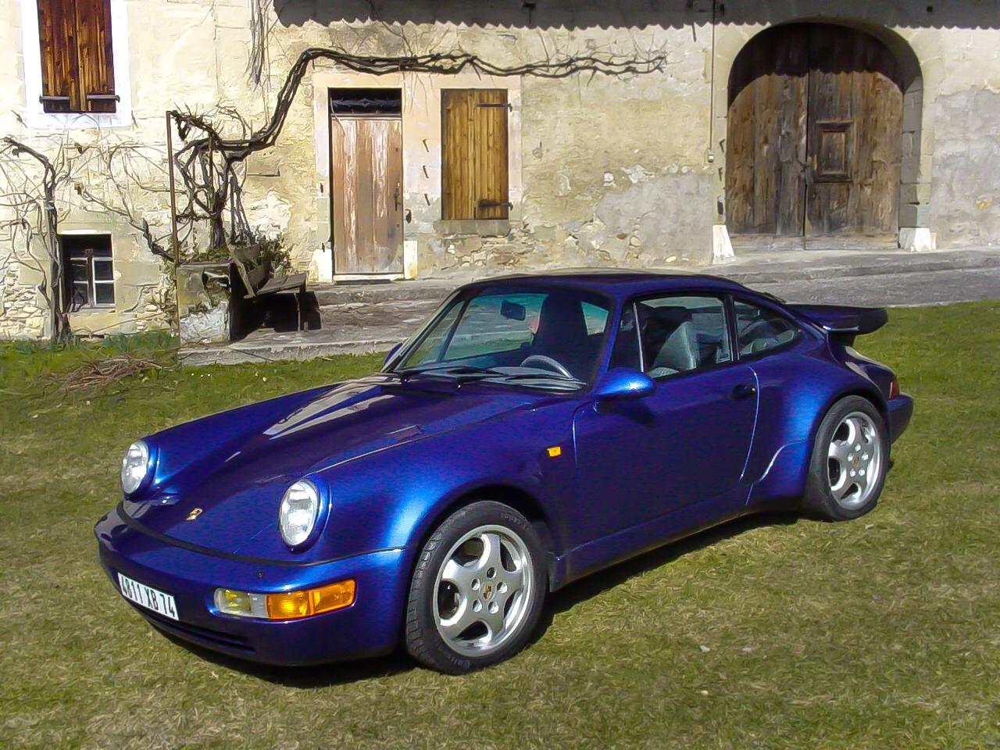

La Porsche 964 Turbo est un modèle emblématique de la célèbre marque allemande, offrant un mélange fascinant de performances sportives et de design intemporel. Voici une description en cinq parties de cette voiture légendaire.
 WikipédiaLa Porsche 964 Turbo se distingue par son design intemporel. Avec ses lignes épurées, ses courbes élégantes et son aérodynamisme soigneusement étudié, cette voiture incarne le style caractéristique de Porsche. Ses phares ronds et son aileron arrière distinctif lui confèrent une identité visuelle unique.
Sous le capot, la Porsche 964 Turbo abrite un moteur flat-six turbocompressé de 3,3 litres ou 3,6 litres, selon la version. Cette motorisation délivre des performances impressionnantes, offrant une puissance accrue, une accélération rapide et une vitesse de pointe élevée. Elle est une véritable machine de sport capable de passer de 0 à 100 km/h en quelques secondes.
La 964 Turbo est également reconnue pour sa tenue de route exceptionnelle. Grâce à la suspension sportive, à la transmission intégrale et à la direction précise, elle offre une expérience de conduite exceptionnelle, avec une adhérence supérieure dans les virages et un équilibre parfait entre agilité et stabilité.
L'intérieur de la Porsche 964 Turbo est synonyme de luxe et de confort. Les matériaux de haute qualité, les sièges sport en cuir, le volant ergonomique et les équipements modernes en font un espace plaisant pour le conducteur et le passager. Malgré son orientation sportive, elle propose un certain raffinement à l'intérieur.
La Porsche 964 Turbo fait partie de la longue lignée de voitures de sport Porsche. Elle a hérité de l'ADN sportif de la marque et a contribué à renforcer la réputation de Porsche en matière de performances automobiles. En tant que modèle très prisé des collectionneurs, elle représente un morceau d'histoire automobile apprécié pour sa combinaison de performances, de style et de technologie.
En résumé, la Porsche 964 Turbo est un symbole de l'ingénierie automobile allemande, offrant un design intemporel, des performances époustouflantes, une tenue de route exceptionnelle, un intérieur luxueux et un riche héritage. Elle incarne parfaitement la passion de Porsche pour l'automobile sportive de haut niveau.